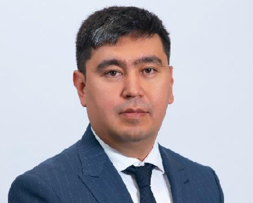

30 лет надёжности, инноваций и цифрового развития в сердце финансовой системы Казахстана.
АО «Центр цифрового развития» (ЦЦР) — дочернее предприятие Национального банка Республики Казахстан. Основанная в 1995 году, компания за три десятилетия стала одним из ключевых поставщиков ИТ-услуг для государственного финансового сектора страны.
Мы обеспечиваем бесперебойную работу критически важных информационных систем: от единого портала государственных закупок до ИТ-инфраструктуры Национального банка. Наша команда из более чем 200 специалистов работает 24/7, чтобы финансовая система Казахстана функционировала без сбоев.
В 2024 году компания прошла ребрендинг: «Банковское сервисное бюро НБК» стало «Цифровым центром развития» — отражая новую стратегию и фокус на цифровой трансформации государственных сервисов.
Путь от Банковского сервисного бюро до Цифрового центра развития — три десятилетия роста и инноваций.
Эти ценности определяют каждое решение, каждый проект и каждое взаимодействие с партнёрами.
Опытные руководители с многолетней экспертизой в области ИТ и финансового сектора.

Расскажите о вашей задаче — наши эксперты подберут оптимальное решение для вашей организации.